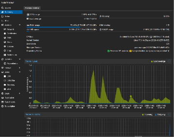
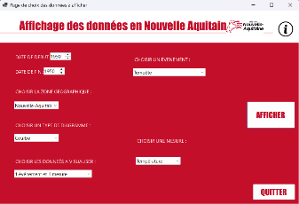
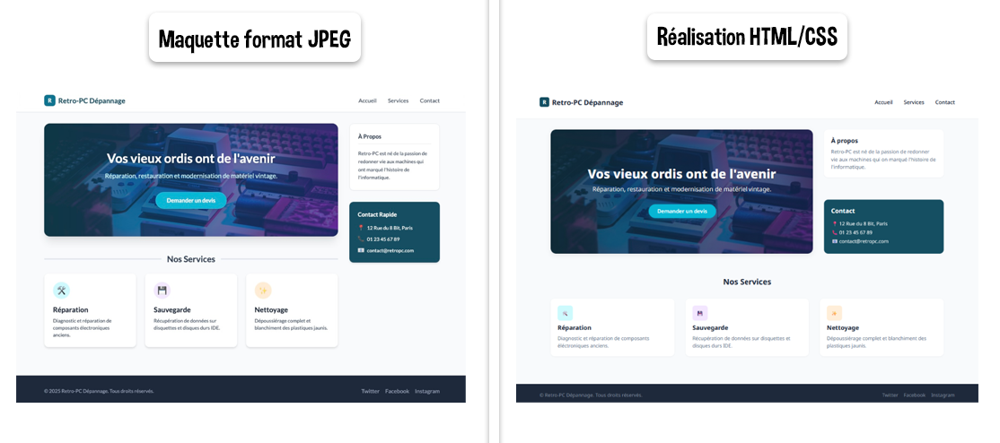
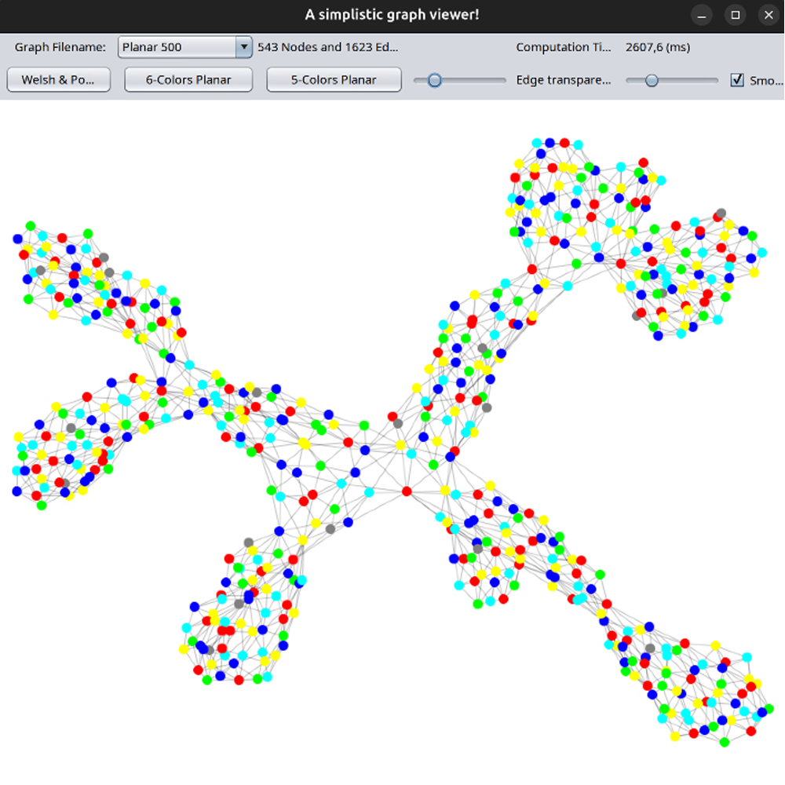
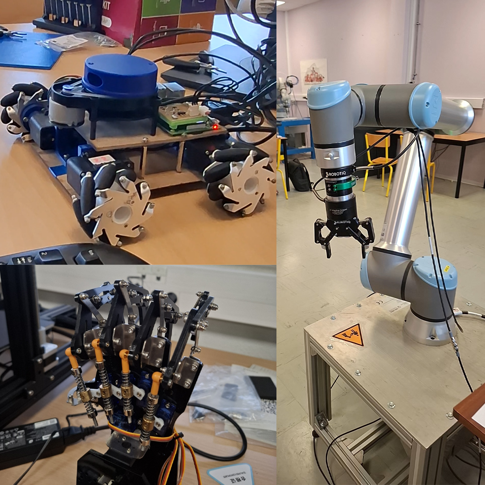

Objectif : Réaliser un stage à dominante « développement » de 8 à 10 semaines, à partir du 18 janvier 2027.
Création d'une infrastructure réseau complète. Stockage vidéo surveillance (Open Media Vault & NextCloud) et automatisation domotique via Home Assistant.

Analyse de données météo et d'incidents climatiques, à partir de bases de données de l'État. Puis traitement pour l'affichage client. J'ai pris en charge la gestion statistique.

Modernisation d'interface, optimisation de l'ergonomie utilisateur et audits de performance.

Développement en Java d'un outil de modélisation et de visualisation de graphes, avec l'algorithme de Welsh–Powell et des algorithmes de 5- et 6-coloration planaire.

Robot autonome de labyrinthe : conception d'un véhicule qui explore un labyrinthe physique et trouve seul sa sortie grâce à un LiDAR et des roues holonomes.

Boutique LDLC - 2022
Stage de deux semaines. Montage de PC sur-mesure.
Direction interarmées des réseaux d'infrastructure et des systèmes d'information - 2021
Configuration et dépannage de différents équipements.
La rigueur acquise par 10 ans de pratique de la clarinette en orchestre et le sens des responsabilités validé par le BAFA et le PSC1 me permettent de m'intégrer rapidement au sein d'une équipe technique.